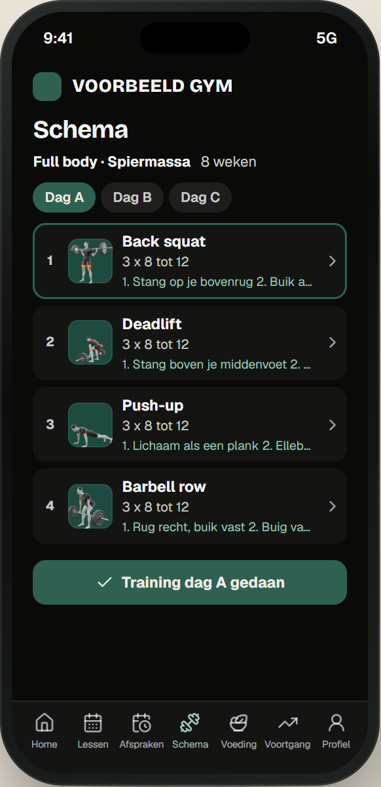
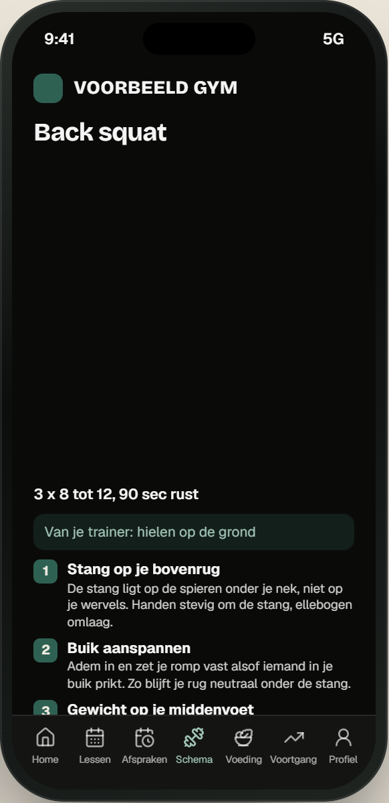
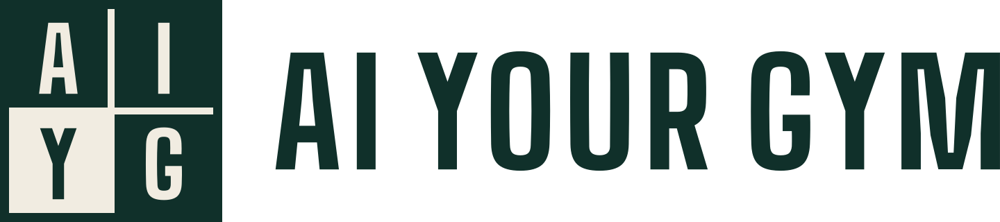
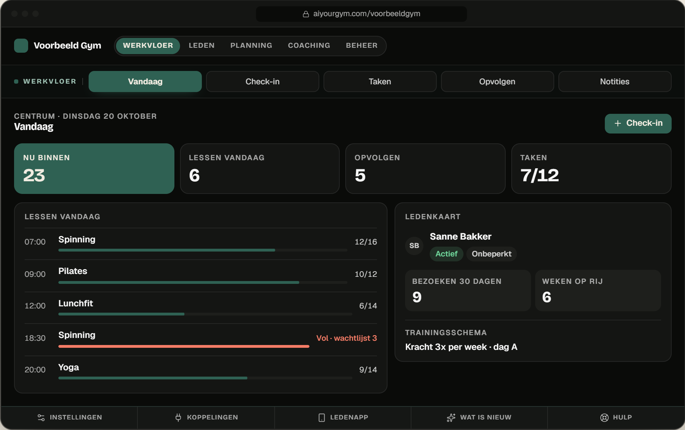
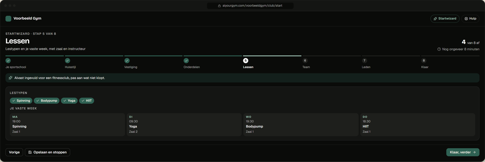

Ledenapp
Reserveren, inchecken, trainen. Een app.
In de naam en kleuren van je sportschool.




Check-in, lessen, rooster, trainingsschema’s met coaching en een ledenapp in jouw naam en kleuren.
Balie, vloer, trainers, eigenaar en leden werken in dezelfde gegevens.

Kies je soort sportschool en pas aan wat niet klopt.

De stang ligt op de spieren onder je nek, niet op je wervels.
Adem in en zet je romp vast. Zo blijft je rug neutraal onder de stang.
Je hele voet blijft op de grond, je staat niet op je tenen.
In de naam en kleuren van je sportschool.

